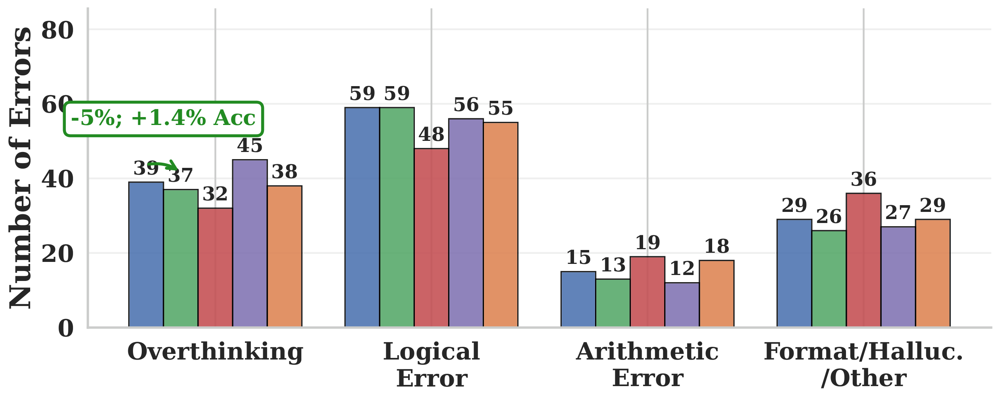
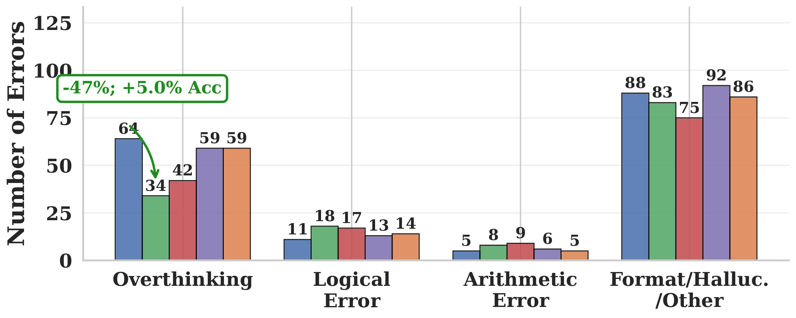
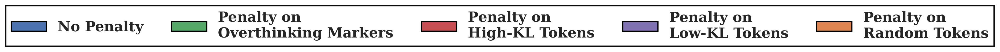
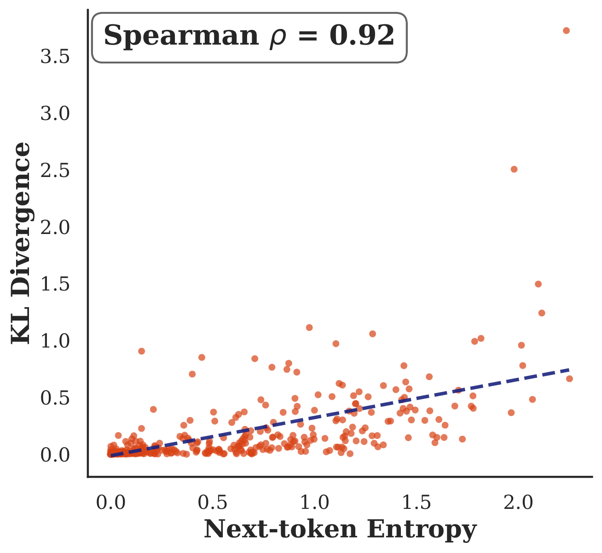
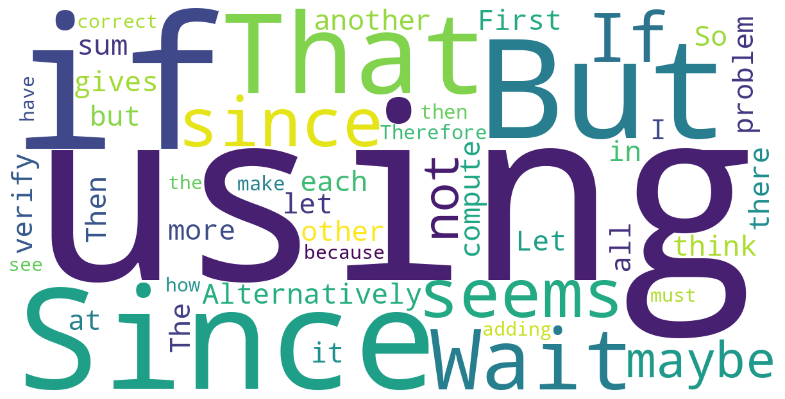
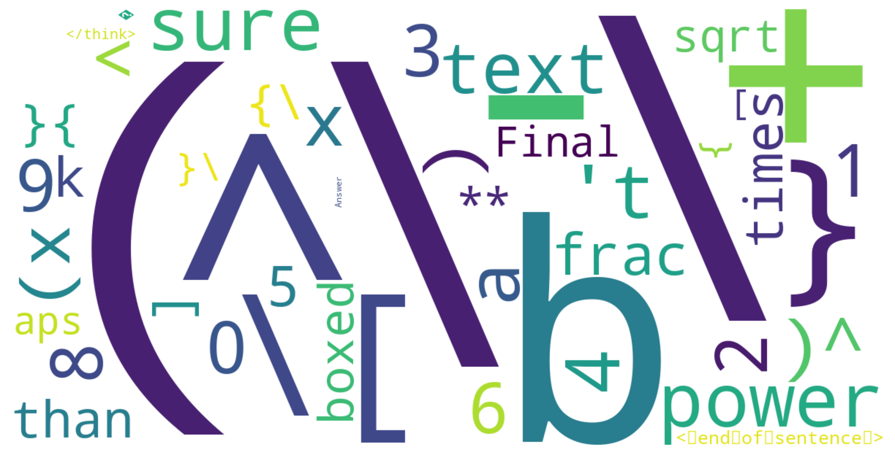
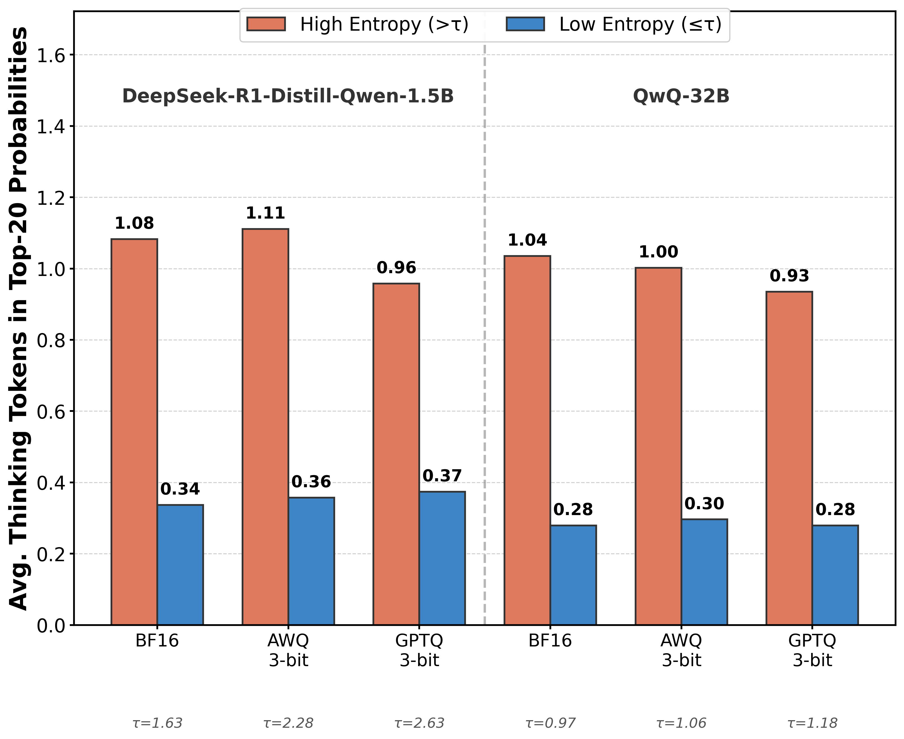
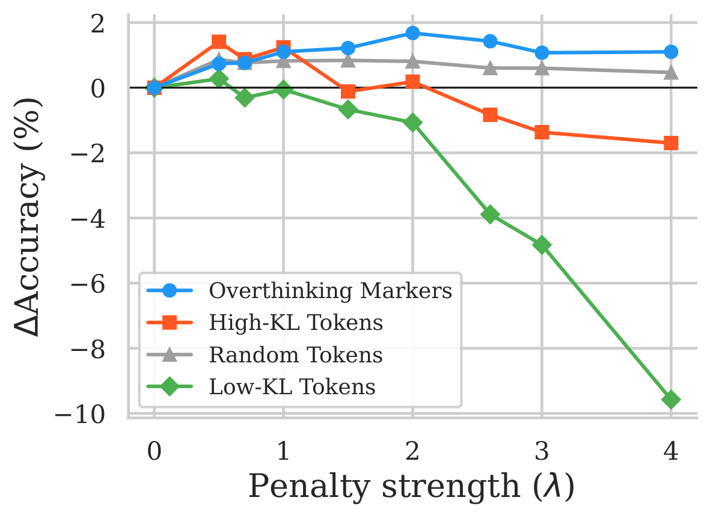
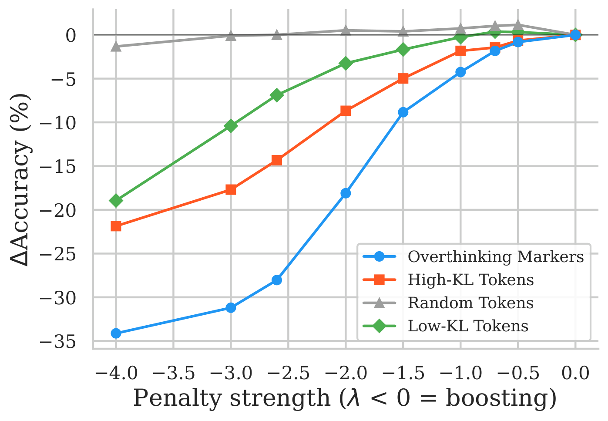

Aggressive PTQ drops accuracy and blows up reasoning length


DeepSeek-R1-Distill-Qwen-1.5B in BF16 vs. various PTQ methods. More aggressive quantization ⇒ lower accuracy and longer reasoning.
A token-level look at why aggressive post-training quantization makes reasoning models overthink.
DeepSeek-R1-Distill-Qwen-1.5B in BF16 vs. various PTQ methods. More aggressive quantization ⇒ lower accuracy and longer reasoning.
TL;DR. Aggressive post-training quantization (PTQ) doesn't just erode reasoning models — it pushes them to overthink. In up to 52% of failures under 3-bit AWQ, the quantized model reaches the correct answer in an intermediate step but never commits to it, opening new reasoning branches until it runs out of tokens. Token-level KL divergence between the BF16 and quantized models is dominated by hesitation tokens (“Wait”, “But”, “Alternatively”) and concentrates at high-entropy positions — exactly where quantization noise has the most leverage. As a diagnostic, we show that a tiny, training-free logit penalty on 50 such markers cuts chain-of-thought length by 12–23% on average while preserving or improving accuracy, and reduces overthinking errors by up to 58% under 3-bit AWQ.
Post-training quantization (PTQ) is the workhorse of efficient LLM deployment: no gradient updates, no training pipeline, just a calibration pass over a handful of sequences. Methods like GPTQ, AWQ, and FlatQuant ship 3–4 bit models that mostly “just work” on standard benchmarks.
When a quantized reasoning model fails, the natural assumption is that quantization eroded its capability — the model can no longer find the answer. We looked closely and found the opposite. Under aggressive PTQ, the model often does find the correct answer mid-trace, then talks itself out of it: it questions its own assumptions, opens new reasoning branches, and never commits.
Quantized reasoning models do not fail because they cannot think; they fail because they cannot stop thinking.
We evaluate five reasoning-specialized LLMs (1.5B–32B) across five benchmarks (GSM8K, MATH-500, AIME-120, GPQA-Diamond, LiveCodeBench), under three PTQ methods (GPTQ, AWQ, FlatQuant) at 3–4 bits. The pattern is consistent: mild quantization (FlatQuant W8A8KV8, 4-bit weight-only) is essentially free, but as we push to 3-bit weights or W4A4KV4, accuracy degrades and chain-of-thought (CoT) length explodes.
That correlation is the seed of our hypothesis: the extra reasoning isn't a side effect of failure — it actively causes it.


To understand which errors quantization introduces, we hand-annotated a subset of failures on MATH-500, then used GPT-5 as an LLM judge (calibrated to >95% agreement with our annotations) to scale the analysis. We bucket each failure into one of four categories:
Quantization increases the absolute number of overthinking errors across all three methods. BF16 has 19 overthinking errors on MATH-500 (26% of 72 errors). Under 3-bit AWQ, overthinking errors jump to 139, a 7.3× increase, becoming the dominant failure mode (52% of 265 errors). GPTQ-3 doubles them; FlatQuant W4A4KV4 more than triples them.





We treat the BF16 model as the reference and run both BF16 and 3-bit AWQ on the same MATH-500 prompts under identical generation prefixes, so any difference we see is purely the effect of quantization. At every decoding position $t$ we compute
where $p_t$ and $q_t$ are the next-token distributions of the full-precision and quantized models. We then associate each KL value with the token the quantized model actually sampled, and average per token across all positions where it appeared.



Two clean patterns fall out:


We can also look at the density of high-KL vs. low-KL tokens in the generated trace. In BF16, math tokens dominate (ratio 0.57 of hesitation/math). Under 3-bit AWQ, that flips to 1.15 — per unit of reasoning, the quantized model is producing more hesitation than math.
The pattern is consistent with a simple mechanism. Yayla et al. (2026) show that the robustness of a quantized network to weight perturbations is governed by the output-layer logit margin: the gap $m = z_{(1)} - z_{(2)}$ between the top-1 and top-2 logits. Large margin ⇒ small chance of flipping the argmax. Small margin (high entropy) ⇒ even a moderate perturbation can change the selected token. The same structural argument extends to autoregressive decoding under stochastic quantization noise.
In our setting, position-level KL has ρ = 0.92 with BF16 next-token entropy. So quantization noise has the most leverage precisely at high-entropy positions. That's half of the story. The other half is what happens to live at high-entropy positions in a reasoning trace.

We now want to verify the story above. If hesitation tokens at high-entropy positions are really the lever quantization is pulling, then suppressing those tokens at decode time should:
We hand-curate $|\mathcal S| = 50$ “overthinking markers” (“Wait”, “But”, “Alternatively”, “perhaps”, “maybe”, “however”, “reconsider”, “backtrack”, …), and at each decoding step subtract a fixed penalty $\lambda > 0$ from their logits:
Zero extra forward passes, zero training, one hyperparameter. Importantly, we deliberately exclude high-KL tokens that aren't overthinking-related (e.g. “so”, which actually helps the model conclude). Several recent works have flagged similar token sets as overthinking signals (Zhao et al. 2025; Fan et al. 2025).
On Qwen-1.5B, averaged over six quantization configurations and five benchmarks, we sweep $\lambda \in \{0.5, 0.7, 1.0, 1.5, 2.0, 2.6, 3.0, 4.0\}$ over four token lists of equal size (50 tokens each):



The pattern is exactly what the diagnostic predicts:
If hesitation tokens really drive overthinking, then boosting them (negative $\lambda$) should explode the chain of thought. It does.


Boosting overthinking markers increases CoT length by up to +445% and drops accuracy by up to −34%. High-KL tokens behave nearly identically (the two lists overlap substantially). Random and low-KL tokens stay flat. The two-sided effect confirms that overthinking markers and high-KL tokens are the lever — suppress them, the chain shrinks; amplify them, it blows up.
We apply the same penalty (with $\lambda$ swept and the best value reported per configuration) across 5 models, 3 quantization methods, and 5 benchmarks. Across all configurations the penalty reduces CoT length, by between 4.1% and 28.0% on average across benchmarks. Accuracy is preserved or improved in most cases.
| Model | Quant | Base Acc / Len | +Pen Acc / Len | ΔAcc | ΔLen% |
|---|---|---|---|---|---|
| Qwen-1.5B | AWQ W3 | 29.0 / 28.0k | 35.2 / 21.6k | +6.2 | −28.0% |
| Qwen-1.5B | GPTQ W3 | 37.8 / 15.0k | 39.7 / 11.8k | +1.9 | −22.6% |
| Qwen-1.5B | FQ W4A4KV4 | 38.2 / 15.0k | 40.5 / 13.3k | +2.3 | −17.6% |
| Qwen-7B | GPTQ W3 | 56.0 / 11.0k | 58.3 / 10.1k | +2.2 | −13.1% |
| Qwen-14B | GPTQ W3 | 65.5 / 8.3k | 67.5 / 8.0k | +2.0 | −4.8% |
| Llama-8B | GPTQ W3 | 49.7 / 12.7k | 53.0 / 11.9k | +3.2 | −7.9% |
| QwQ-32B | AWQ W3 | 72.9 / 10.5k | 73.7 / 9.5k | +0.7 | −9.6% |
| QwQ-32B | BF16 | 79.0 / 9.9k | 80.7 / 9.0k | +1.7 | −9.6% |
Selected rows from Table 1 of the paper; full table covers all five models × four PTQ settings × five benchmarks.
Overthinking-error count drops accordingly: on MATH-500 under 3-bit AWQ, overthinking errors fall from 139→58 (−58%), and total errors from 265→194. The penalty also shortens BF16 chains by 5.6–10% depending on the model — consistent with our reading that quantization amplifies a failure mode already present in full-precision reasoning models, rather than introducing a new one.
BF16 — ~1,124 tokens
3-bit AWQ — 5,494 tokens, never terminates
Correct reasoning start (early):
“The largest eight-digit binary number is $11111111_2$. Each digit represents a power of two… $128+64+32+16+8+4+2+1 = 255$.”
Then the path-forking begins:
“Wait, but maybe `eight-digit' means something else? … Wait, maybe it means eight digits in base 10 restricted to 0s and 1s? … Wait, what if the phrasing is tricky?”
Same question, same model architecture, only the quantization differs. The quantized model reaches 255 within the first paragraph and then talks itself out of committing.
@article{lotfi2026quantized,
title = {Quantized Reasoning Models Think They Need to Think Longer, but They Do Not},
author = {Lotfi, Sanae and Kirichenko, Polina and Li, Steven and Liu, Zechun},
year = {2026},
}